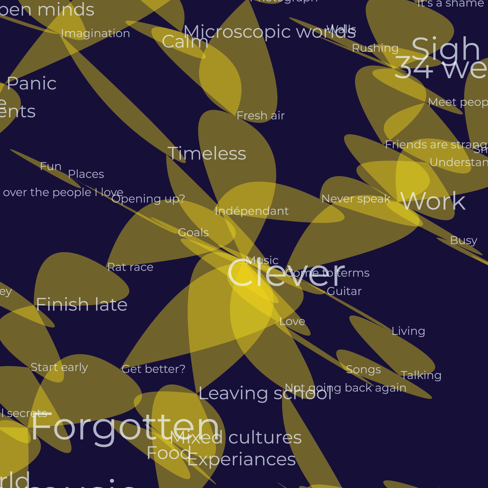

Personal Journal
Butterflies speak for metamorphosis, which symbolizes healing and growth. This abstraction adds a layer of human touch to the interpretation of personal stories and emotional data.
Explore
Community Forum
Mindscape shows the interconnectedness of human conciousness
The following example demonstrated a survey on environmental consciousness with Mindscape demo, when 20 participants were asked the question:
What part of you or your body are coming from nature?